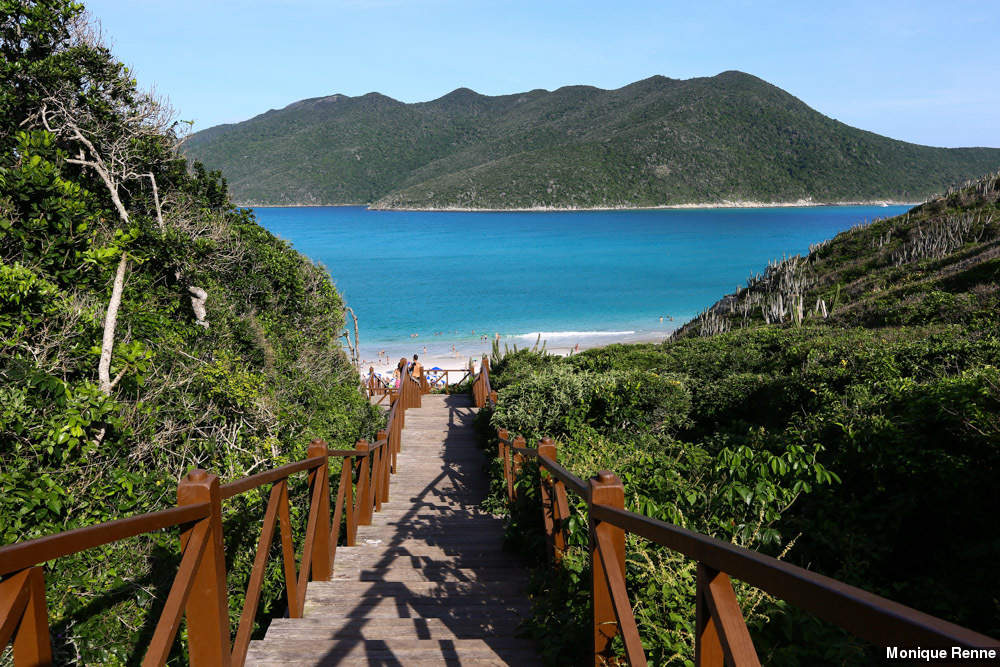
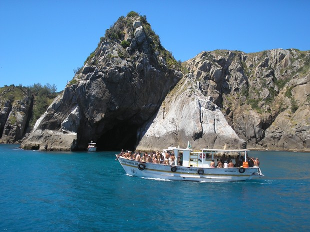
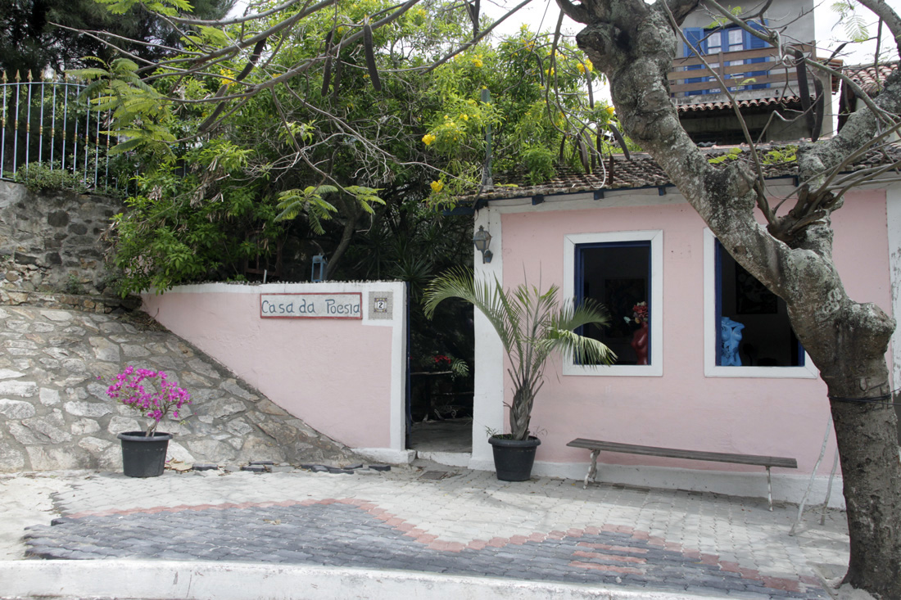

Prainhas do Pontal do Atalaia
Only reachable by car or by boat. it is considered as one of the most beautiful beaches in Brazil. Crystal clear warm water, baking powder fine sand and beautiful and calm environment.
Gruta Azul
Crystal clear waters on the Atlantic Ocean, many boats go there to see an impressive cave called Gruta Azul. You can even see whales when they search for less cold waters for laboring. It is a must see place in the north of Rio State. You should never miss seeing Gruta Azul, an important plus in your trip to Brazil.
Casa Victorrino Carrico
The House of Poetry Victorino Carriço was the home of the poet Victorino Carriço, author of the anthem of the city of Arraial do Cabo. Located in the historical center, in the shadow of Nossa Senhora dos Remédios Church, it is a public space where there are soiree, readings of tales and poetry, as well as literary workshops.